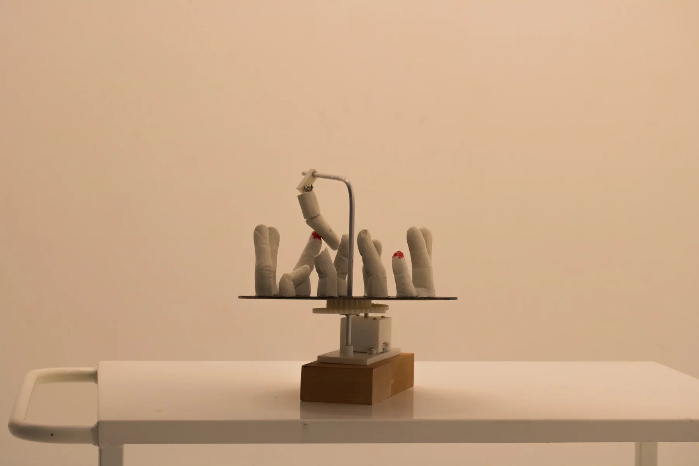
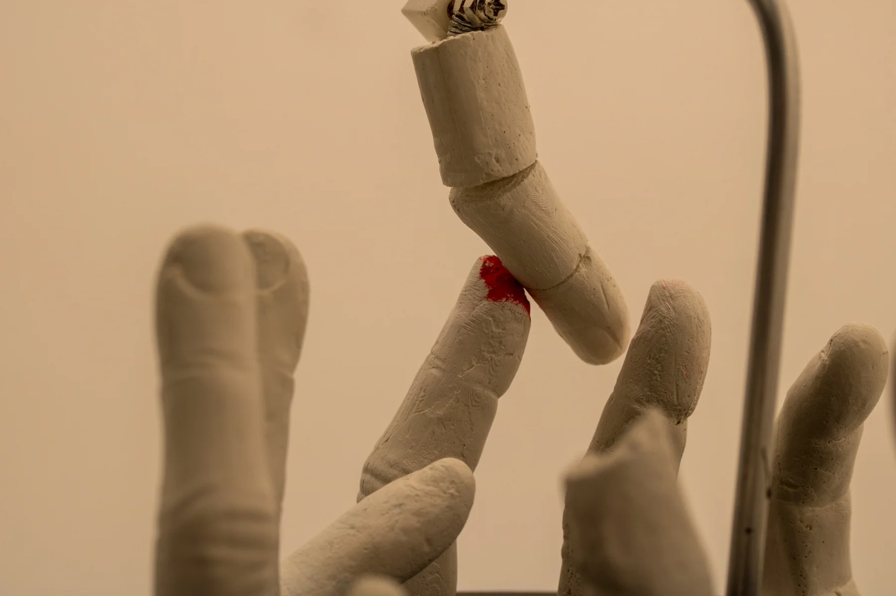
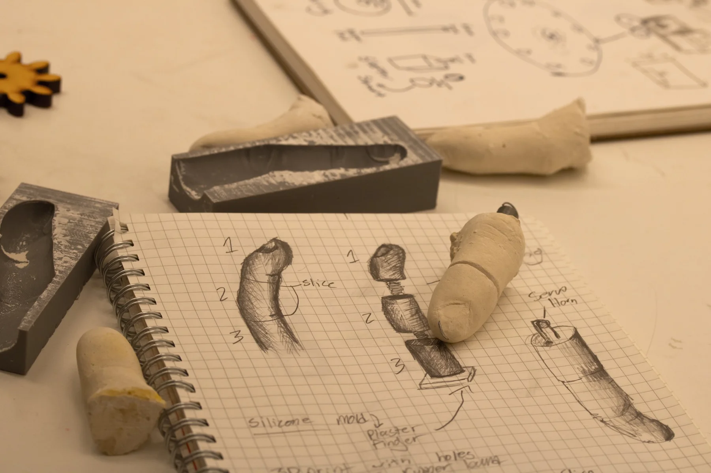
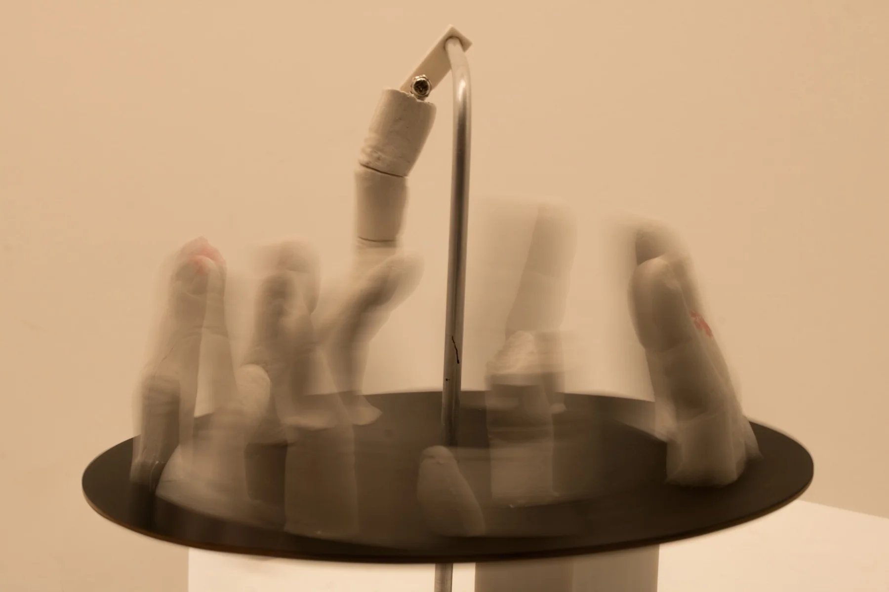
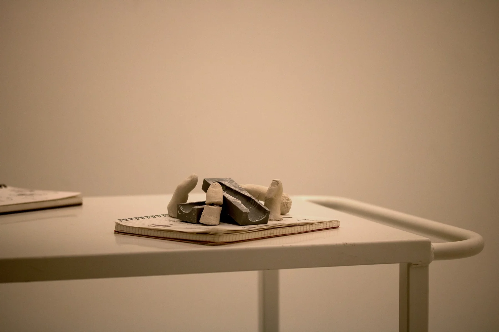

Wearable / Interactive
A collection of studies in movement, material and interaction, documented through physical prototypes and photography.


01 / Investigation
Objects in motion.
This collection explores the relationship between the body, movement and material. Physical prototypes are used to examine interaction, while photography records the forms and traces they produce.
The work is documented both at rest and in motion, giving different views of the same objects.




02 / Documentation
Following the movement.
Long-exposure photography records the paths produced during movement. Instead of a single frozen moment, the resulting images show the object’s motion over time.




Prototype in motion
Video documentation of the interactive prototype. Download video ↗
Next project